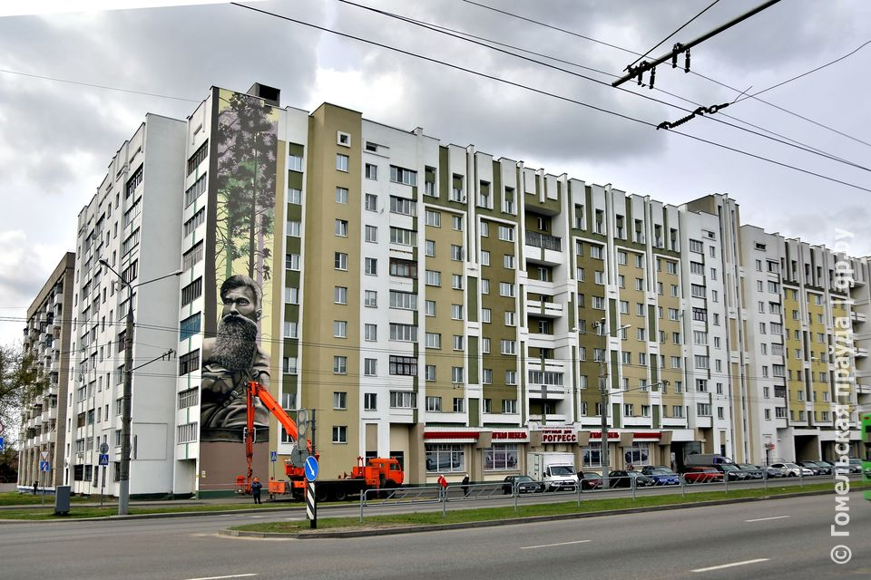

Самая длинная улица Гомеля — 7,8 км, и это улица Барыкина. Она протянулась через весь Советский район города, начинаясь от Украинской улицы и заканчиваясь у Объездной дороги.
- Исторические названия: В XIX веке улица носила имя Стасенковская, позже — Будённого. В 1957 году она была переименована в честь Емельяна Игнатьевича Барыкина, Героя Советского Союза, руководителя подполья и партизанского движения в Гомеле.
- География: Улица пересекает важные городские магистрали: проспект Речицкий, улицу Богдана Хмельницкого, а также выходит к промышленным и жилым кварталам.
- Архитектура и застройка: На протяжении улицы можно увидеть разные эпохи городской архитектуры: - жилые дома 1950–1970-х годов, построенные в стиле «сталинок» и «хрущёвок»; - современные многоэтажные новостройки; - частный сектор ближе к окраинам. - Социальная инфраструктура: На улице расположены школы, магазины, аптеки, спортивные площадки, а также остановки общественного транспорта.
- Транспорт: По улице проходят маршруты автобусов и маршрутных такси, связывающие её с центром и другими районами города.
- Атмосфера: Улица Барыкина — это своеобразная «артерия» Гомеля, где переплетается память о герое и повседневная жизнь горожан. Здесь можно почувствовать, как история соединяется с современностью: от старых домов и памятных мест до новых жилых комплексов и оживлённых перекрёстков. 